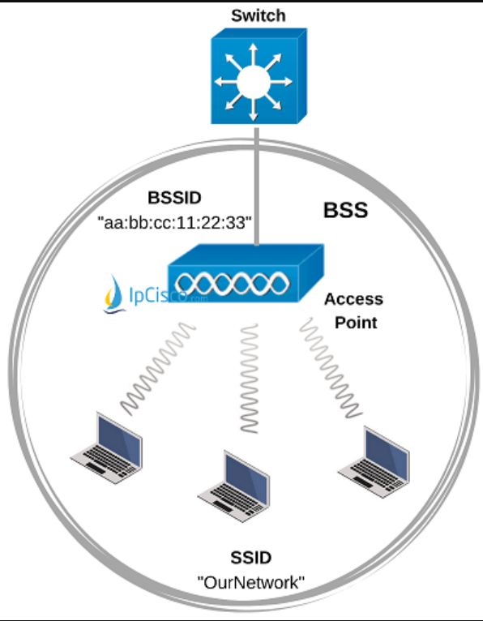
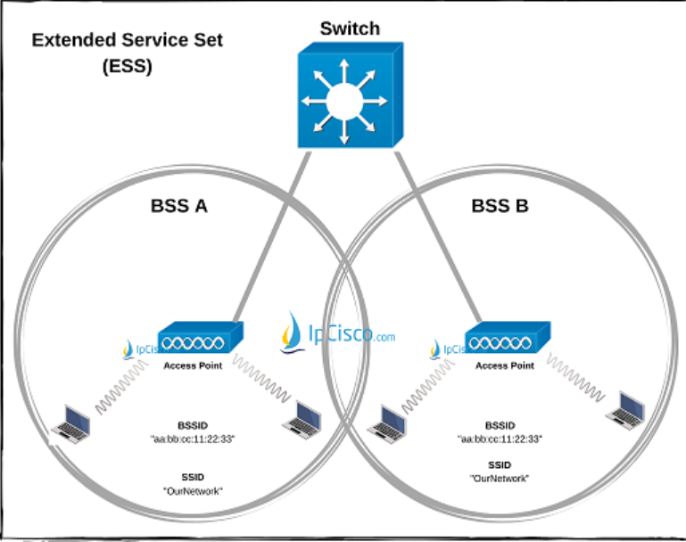
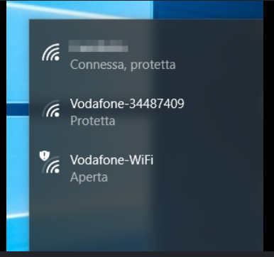
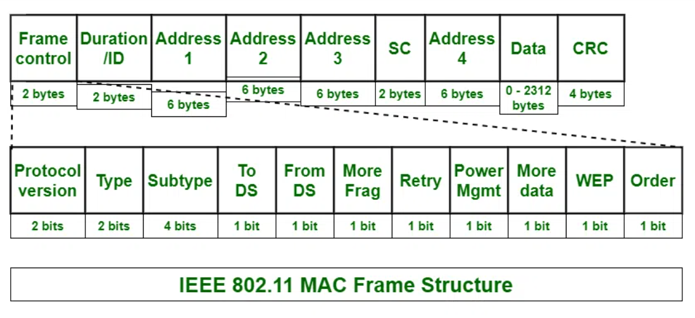
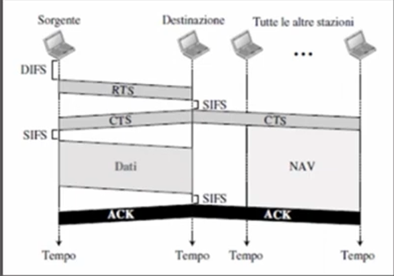

03 — Architettura wireless: IEEE 802.11
Topologie Wi-Fi, frame 802.11 e CSMA/CA
Sommario
Parte 1: Livello Fisico e Topologie
1. Dispositivi e Modalità
- Access Point (AP): Dispositivo che funge da “ponte”, consentendo la connessione di stazioni/terminali wireless tramite onde radio.
- DS (Distribution System): Il sistema “spina dorsale” (solitamente cablato via Ethernet) che interconnette più Access Point. Permette a un dispositivo wireless di comunicare con dispositivi cablati e viceversa.
- Nota: L’AP converte il Frame Wireless (802.11) in Frame Ethernet (802.3) rimuovendo gli header specifici del Wi-Fi.
2. Tipi di Reti Wireless
Esistono due modalità principali di organizzazione della rete:
A. Wireless Ad-Hoc (IBSS - Independent Basic Service Set)
- Rete Peer-to-Peer (P2P).
- Ogni nodo funge sia da Client che da Server.
- Struttura poco solida, non scalabile.
B. Wireless Infrastructure (BSS - Basic Service Set) → Più usata
- C’è un punto di coordinamento centrale: l’Access Point (AP).
- Tutte le comunicazioni passano attraverso l’AP, anche se due PC sono vicini.
3. Identificativi e Scalabilità
- BSS (Basic Service Set): Un singolo AP + i dispositivi connessi.
- BSSID: È l’indirizzo MAC fisico dell’Access Point (es.
aa:bb:cc:dd:ee:ff).
- BSSID: È l’indirizzo MAC fisico dell’Access Point (es.
- ESS (Extended Service Set): Insieme di più BSS interconnessi (più AP collegati allo stesso DS).
- SSID: È il nome logico della rete (es. “WiFi_Casa”) che identifica l’intera ESS.

BSS → BSSID (MAC address AP)

ESS → (E)SSID (Nome wifi)

SSID
Nota
Perché avere più AP (ESS)?
- Copertura: Gli AP hanno un range limitato; aggiungerne altri estende il segnale.
- Posizionamento: Solitamente si montano sul soffitto per ridurre gli ostacoli fisici.
4. Gestione Avanzata
- WLC (Wireless LAN Controller): In reti enterprise con decine di AP, si usano Lightweight AP (AP “leggeri” senza cervello) gestiti centralmente dal WLC, che invia le configurazioni a tutti simultaneamente.
- Roaming: La capacità di un client di spostarsi da un AP all’altro senza perdere la connessione.
- Avviene tramite Disassociation (dal vecchio BSS) e Reassociation (al nuovo BSS) in modo automatico.
Parte 2: Livello Logico (Il Frame 802.11)
A differenza di Ethernet, il frame Wi-Fi è molto più complesso perché deve gestire un mezzo condiviso e inaffidabile (l’aria).

Anatomia del Frame (Generic Header)
Il campo più importante è il Frame Control (2 Byte), diviso in sottocampi:
- Version: Indica lo standard IEEE usato (es. 802.11a/b/g/n/ac/ax).
- Type & Subtype: Definiscono la funzione del pacchetto.
00Management: Gestione della connessione (Associazione, Autenticazione).01Control: Supporto alla trasmissione (usati nel CSMA/CA).1011RTS (Request to Send)1100CTS (Clear to Send)1101ACK (Acknowledgment)
02Data: Trasporta il payload effettivo (i dati dell’utente).
- To DS / From DS: (Vedi tabella sotto per dettaglio).
- More Fragments:
1se il pacchetto è frammentato e ne arrivano altri. - Retry:
1se è una ritrasmissione (il frame precedente non ha ricevuto ACK). - Power Management: Indica se il mittente sta entrando in modalità risparmio energetico dopo l’invio.
- More Data: Indica al ricevente (in risparmio energetico) che ci sono altri dati bufferizzati per lui.
- Protected Frame:
1se il payload è criptato (WEP/WPA2/WPA3 = Wi-Fi Protected Access). - Order: (Reserved) Per trasmissione ordinata rigorosa (raro).
Altri campi importanti
- Duration / ID: Indica per quanto tempo il canale resterà occupato.
- Serve a impostare il NAV (Network Allocation Vector) per il meccanismo CSMA/CA (Collision Avoidance).
- Sequence Control: Serve a riordinare i pacchetti.
- Fragment Number: Se il pacchetto è frammentato (MTU = Maximum Trasmission Unit).
- Sequence Number: Numero progressivo per identificare duplicati o pacchetti persi.
La Logica “To DS / From DS”
Questi due bit dicono al dispositivo la direzione del traffico e come interpretare gli indirizzi MAC (che nel Wi-Fi possono essere fino a 4!).
| To DS | From DS | Significato | Descrizione |
|---|---|---|---|
| 0 | 0 | Host ↔ Host | Rete Ad-Hoc (IBSS) o comunicazione diretta. |
| 0 | 1 | AP → Host | Download: Il frame arriva dal sistema cablato (DS) verso il client. |
| 1 | 0 | Host → AP | Upload: Il client invia dati verso la rete cablata (DS). |
| 1 | 1 | AP ↔ AP | Bridge Wireless (WDS): Mesh network o ripetitori. |
Spiegazione pratica del routing dei frame e dei 4 indirizzi MAC:
Youtube Link - 802.11 Frames & Addressing
CSMA/CA (Carrier Sense Multiple Access / Collision Avoidance)
1. Significato
Nota
Differenza Chiave:
Ethernet (Cablato): Usa CSMA/CD (Collision Detection). Se c’è collisione, la rileva e ritrasmette.
Wi-Fi (Wireless): Usa CSMA/CA (Collision Avoidance). Non può rilevare collisioni mentre trasmette (radio half-duplex), quindi deve prevenirle chiedendo il permesso prima.
- CS (Carrier Sense): “Ascolto il canale”.
- Fisico: Rilevo energia RF nell’aria.
- Virtuale: Controllo il timer NAV (vedi sotto).
- MA (Multiple Access): Più dispositivi condividono lo stesso mezzo (l’aria).
- CA (Collision Avoidance): Algoritmo per evitare che due dispositivi parlino sopra l’altro
2. Instanti temporali e frame di controllo
- SIFS (Short Inter-Frame Space):
- Usato per frame ad alta priorità (ACK, CTS) o per passare dalla modalità ricezione a trasmissione.
- DIFS (Distributed Inter-Frame Space):
- Tempo standard di attesa prima di iniziare una nuova trasmissione. (DIFS > SIFS).
- Controlli RTS Request To Send, CTS Clear to Send, ACK Acknowledge
- Hanno campo duration, settano NAV
- NAV (Network Allocation Vector):
- È un Carrier Sense Virtuale.
- È un contatore interno impostato dai frame (RTS/CTS) che dice: “La linea sarà occupata per X millisecondi, non provare nemmeno ad ascoltare l’aria, aspetta e basta”.
3. Funzionamento (Handshake)

Nota
Handshake → Processo dove due dispositivi stabiliscono una comunicazione
- Ascolto Iniziale: La Sorgente vuole trasmettere.
- Controlla il NAV. Se > 0, aspetta.
- Se NAV = 0, ascolta il canale fisico per un tempo pari a DIFS.
- Backoff Casuale: (Passaggio fondamentale anti-collisione)
- Anche se il canale è libero dopo il DIFS, A aspetta un ulteriore tempo random (Backoff) per evitare di partire insieme a qualcun altro.
- RTS (Request To Send):
- A invia il frame RTS al destinatario.
- Contiene la Duration (quanto tempo servirà per tutto lo scambio).
- Effetto: Tutti i vicini di A leggono la duration e settano il loro NAV (zitti tutti).
- CTS (Clear To Send):
- B aspetta un SIFS.
- B invia il frame CTS a A (e a tutti i suoi vicini, es. C).
- Effetto: C riceve il CTS, capisce che B sta per ricevere dati e imposta il suo NAV (risoluzione nodo nascosto).
- Dati:
- A aspetta un SIFS e invia il pacchetto DATA.
- ACK:
- B riceve correttamente, aspetta un SIFS e manda ACK.
- Fine trasmissione. Il NAV di tutti scade e la gara per il canale ricomincia.
4. Meccanismo troppo prudente?
Hidden terminal (PRO)
Scenario: A 📡 --- 📡 B 📡 --- 📡 C
- A vede B.
- C vede B.
- ma A e C NON si vedono (sono troppo lontani o c’è un ostacolo).
Soluzione: B usa RTS/CTS, quindi i messaggi di A vengono propagati
Nodo esposto (Limitazione)
Scenario: A --- B --- C --- D
- A vuole parlare con B e C con D
- Problema: C voleva parlare con D (che è libero!), ma è bloccato dal CTS di B.
- Spreco di banda per evitare collisione
- Filosofia “Better safe than sorry”